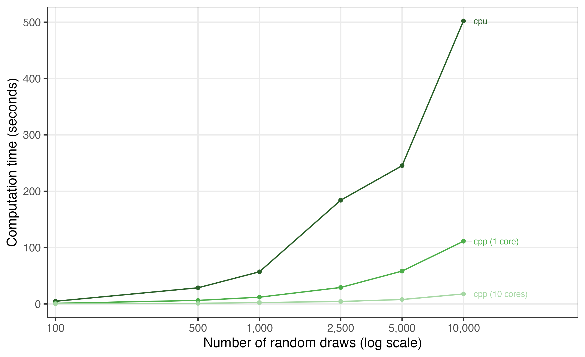
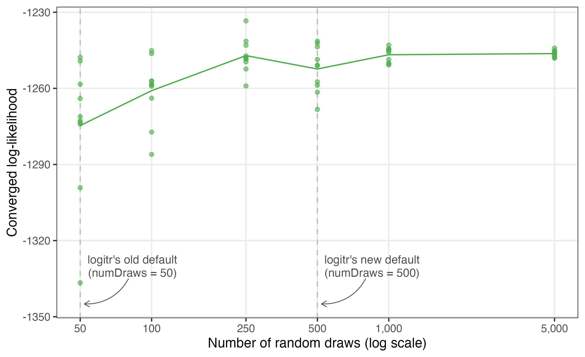

{logitr} is considerably faster than other packages with similar functionality. To demonstrate this, a benchmark was conducted by estimating the same preference space mixed logit model using the following R packages:
- {logitr}
- {mixl}
- {mlogit}
- {gmnl}
- {apollo}
Because {logitr} estimates mixed logit models using a compiled,
multithreaded backend, its speed also depends on the number of cores
available. To make the comparison fair, every package is benchmarked
single-threaded, and every package that can use multiple cores
({logitr}, {apollo}, and {mixl}) is also benchmarked at higher
core counts, denoted in parentheses, e.g. logitr (1 cores)
versus logitr (10 cores). One caveat for {mixl}: it
multithreads via OpenMP, which the default macOS toolchain (Apple clang)
does not provide, so enabling it on a Mac requires a one-time toolchain
setup (documented in the header of the benchmark script).
The benchmark script is at data-raw/runtimes.R
in the package repository. The runtimes data frame records
the version of each package used; the results shipped with the package
were produced locally on a 10-core Apple M-series Mac using these
versions:
| package | version |
|---|---|
| logitr | 1.2.0 |
| mixl | 1.3.5 |
| mlogit | 2.0.0 |
| gmnl | 1.1.3.2 |
| apollo | 0.3.7 |
Benchmarks will always vary for every run of a benchmarking code,
even on the same machine, due to variations in background processes and
the number of cores available. So if you run this code yourself, your
results may vary, though the overall order and trends in each package’s
relative speed should be similar. These particular results are specific
to the machine they were run on – a 10-core Apple M-series Mac – so the
multi-core rows reflect that core count, and the exact package versions
used are recorded in the version column of the
runtimes data frame.
Comparing run times
The {logitr} package includes a runtimes data frame with
the benchmark results. The tables below summarize the run times (in
seconds) for each package and how many times slower each is relative to
single-threaded {logitr} (logitr (1 cores)), which is used
as the reference point for a fair, hardware-independent comparison.
library(logitr)
library(dplyr)
library(tidyr)
library(kableExtra) # For tables
times <- runtimes %>% select(-version)
logitr_time <- times %>%
filter(package == "logitr (1 cores)") %>%
rename(time_logitr = time_sec)
time_compare <- times %>%
left_join(select(logitr_time, -package), by = "numDraws") %>%
mutate(mult = round(time_sec / time_logitr, 1))
# Compare raw times (seconds)
time_compare %>%
select(package, numDraws, time_sec) %>%
mutate(time_sec = round(time_sec, 1)) %>%
pivot_wider(names_from = numDraws, values_from = time_sec) %>%
kbl()| package | 50 | 500 | 1000 | 1500 |
|---|---|---|---|---|
| logitr (1 cores) | 0.5 | 6.3 | 12.1 | 15.5 |
| logitr (5 cores) | 0.2 | 1.4 | 3.4 | 3.7 |
| logitr (10 cores) | 0.2 | 1.2 | 1.9 | 2.7 |
| mixl (1 cores) | 6.0 | 56.1 | 123.2 | 180.0 |
| mixl (5 cores) | 1.7 | 14.0 | 36.5 | 45.7 |
| mixl (10 cores) | 3.0 | 19.6 | 45.4 | 56.7 |
| mlogit | 4.8 | 33.8 | 64.6 | 88.3 |
| gmnl | 6.4 | 43.9 | 77.5 | 123.7 |
| apollo (1 cores) | 6.0 | 13.1 | 114.9 | 161.7 |
| apollo (5 cores) | 9.8 | 13.8 | 73.2 | 97.3 |
| apollo (10 cores) | 12.3 | 17.6 | 68.2 | 94.9 |
Now compare how many times slower each is relative to single-threaded
{logitr} (logitr (1 cores)), the fair, hardware-independent
reference point:
time_compare %>%
select(package, numDraws, mult) %>%
pivot_wider(names_from = numDraws, values_from = mult) %>%
kbl()| package | 50 | 500 | 1000 | 1500 |
|---|---|---|---|---|
| logitr (1 cores) | 1.0 | 1.0 | 1.0 | 1.0 |
| logitr (5 cores) | 0.4 | 0.2 | 0.3 | 0.2 |
| logitr (10 cores) | 0.4 | 0.2 | 0.2 | 0.2 |
| mixl (1 cores) | 11.3 | 8.8 | 10.2 | 11.6 |
| mixl (5 cores) | 3.1 | 2.2 | 3.0 | 2.9 |
| mixl (10 cores) | 5.6 | 3.1 | 3.7 | 3.7 |
| mlogit | 9.0 | 5.3 | 5.3 | 5.7 |
| gmnl | 12.0 | 6.9 | 6.4 | 8.0 |
| apollo (1 cores) | 11.1 | 2.1 | 9.5 | 10.4 |
| apollo (5 cores) | 18.3 | 2.2 | 6.0 | 6.3 |
| apollo (10 cores) | 23.0 | 2.8 | 5.6 | 6.1 |
The figure below visualizes the run times. All of the figures in this
article are generated by the data-raw/figures.R
script in the package repository.

Note that the estimation times reflect both the cost per iteration (which grows with the number of draws) and the number of iterations each package’s optimizer takes to converge, which can itself vary with the number of draws. This is why some packages – particularly {apollo} – show run times that are not strictly increasing in the number of draws. The overall comparison is robust to this: {logitr} is dramatically faster across every draw count, and its advantage grows with more draws and more cores.
Scaling to large draw counts
The comparison above stops at 1,500 draws because that is roughly where the other packages become impractically slow. {logitr}, by contrast, scales comfortably to 10,000 draws, which can be useful when many random parameters demand a large simulation sample for a stable simulated log-likelihood. The figure below isolates {logitr} and shows how its full-fit estimation time grows with the number of draws for each of its three backends:
-
cpu– the native R path (memory-safe, single-threaded), -
cpp (1 core)– the compiled backend on a single core, and -
cpp (10 cores)– the compiled backend on all 10 cores.
These results are stored in the runtimes_draws data
frame and generated by the same data-raw/runtimes.R
script, run on the same 10-core Apple M-series machine as the
cross-package benchmark above.
runtimes_draws %>%
mutate(time_sec = round(time_sec, 1)) %>%
pivot_wider(names_from = numDraws, values_from = time_sec) %>%
kbl()| config | 100 | 500 | 1000 | 2500 | 5000 | 10000 |
|---|---|---|---|---|---|---|
| cpu | 4.7 | 28.7 | 57.0 | 184.0 | 245.3 | 502.3 |
| cpp (1 core) | 1.1 | 6.3 | 12.0 | 29.2 | 58.3 | 111.3 |
| cpp (10 cores) | 0.3 | 1.1 | 2.5 | 4.3 | 7.8 | 17.8 |

The compiled backend is several times faster than the native R path at every draw count, and adding cores multiplies that advantage further – so even at 10,000 draws, a model that is essentially out of reach for the other packages estimates in a fraction of the time.
What the speed buys you: a stable log-likelihood
Speed is not the end goal – it is what makes enough draws
affordable. The mixed logit log-likelihood is approximated by
simulation, so any estimate carries simulation error that shrinks as the
number of draws grows. Historical defaults are small: {mlogit} and
{gmnl} default to 40 draws, Stata’s mixlogit to 50, and
{logitr} itself defaulted to 50 prior to version 1.2.0. Those defaults
date from when estimation was slow enough that more draws felt like a
luxury, but they leave enough simulation noise in the log-likelihood to
matter.
To make that noise visible, the same mixed logit model used in the
benchmarks above was estimated repeatedly at increasing draw counts. At
each draw count the model was estimated 10 times using randomized MLHS
draws with a different seed each time, with every run starting from the
same converged reference solution – so at a given draw count, the
across-seed spread in the converged log-likelihood reflects simulation
error: the noise in the simulated log-likelihood shifts the converged
value, and at low draw counts it can distort the surface enough that
some runs converge to different local optima entirely. The results ship
with the package in the loglik_draws data frame, generated
by the same data-raw/runtimes.R
script (run on the same 10-core machine as above).
loglik_summary <- loglik_draws %>%
group_by(numDraws) %>%
summarise(
min = min(logLik),
max = max(logLik),
range = max(logLik) - min(logLik),
sd = sd(logLik),
median_time_sec = median(time_sec)
) %>%
mutate(across(min:median_time_sec, \(x) round(x, 1)))
kbl(loglik_summary)| numDraws | min | max | range | sd | median_time_sec |
|---|---|---|---|---|---|
| 50 | -1336.6 | -1247.8 | 88.8 | 26.3 | 0.3 |
| 100 | -1286.0 | -1245.1 | 40.9 | 12.5 | 0.3 |
| 250 | -1259.1 | -1233.4 | 25.6 | 6.8 | 0.5 |
| 500 | -1268.3 | -1241.4 | 26.9 | 9.0 | 0.7 |
| 1000 | -1250.8 | -1243.0 | 7.8 | 2.9 | 1.1 |
| 5000 | -1248.1 | -1244.1 | 4.0 | 1.3 | 4.2 |

At 50 draws the converged log-likelihood ranges over about 89 units
across seeds – easily enough to flip a likelihood-based model comparison
– while at 500 draws the spread is roughly 3.3 times smaller and keeps
narrowing from there. (The narrowing is not perfectly monotonic – with
few draws, an occasional run wanders to a different local optimum, which
is itself a symptom of the simulation noise, but the trend is
unmistakable.) And because of the compiled backend, those 500 draws cost
only about 0.7 seconds on this model. This is why {logitr} defaults to
numDraws = 500: at these speeds there is no longer a good
reason to accept the simulation noise of a 40-50 draw default.